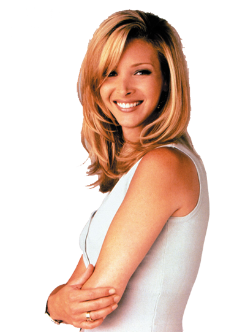
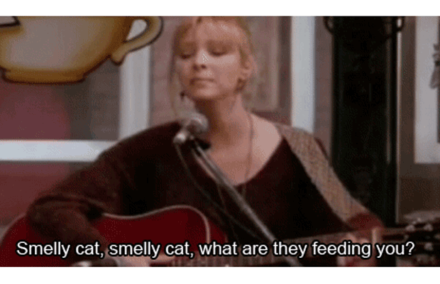

Phoebe
Luckasta Phoebe kao dijete živjela je na cesti jer joj je otac rano napustio obitelj, a majka joj se ubila (u trećoj sezoni otkriva da joj
žena koju je smatrala majkom zapravo nije prava majka te pronalazi pravu). Sa sestrom blizankom, kako sama kaže, nije pričala otkad su dijelili majčin trbuh.
Ona živi s bakom koja kasnije umire.
Phoebe u svim ljudima vidi najbolje, često je se povezuje i s natprirodnim pojavama (kao kad je duh starije klijentice ušao u nju) i svakako od svih
likova ima najosebujniji lik. Nije bila u ozbiljnoj vezi sve dok nije upoznala Mike-a i to sasvim slučajno nakon što je Joey zaboravio naći nekog za
spoj u četvoro te na spoj poveo stranca. Na kraju se za Mike-a i udaje.
Phoebe ima zlu sestru blizanku, Ursulu, koja je konobarica i nije u kontaktu s Phoebe. U prošlosti se pravila da je Phoebe kako bi snimala filmove za odrasle.
Phoebe je po zanimanju maserka, a u slobodno vrijeme pjeva u "Central Perk-u". Osim što pjeva, svira i gitaru, a najpoznatija pjesma joj je
"Smelly Cat".

Glumica koja je utjelovila ovog lika je Lisa Kudrow.
Gdje je danas Lisa Kudrow?
Lisa Kudrow (50) imala je niz zapaženih filmskih uloga u filmovima poput 'P.S. Volim te, 'Susjedi', 'Druga žena', ali nastavila je i snimati
humoristične serije. U braku je s Michelom Sternom, s kojim ima sina Juliana.
O seriji
Zanimljivosti
Monica
Rachel
Phoebe
Chandler
Joey
Ross